This set explores how to take aesthetic mirror pictures through urban aesthetics and elegant tone under soft lighting. Compositions use leading lines with minimal set, keeping focus clear and tidy. Details like casual styling and balanced colors make browsing easy.
Browse mirror images. Page 9 of curated mirror-style portrait collection.
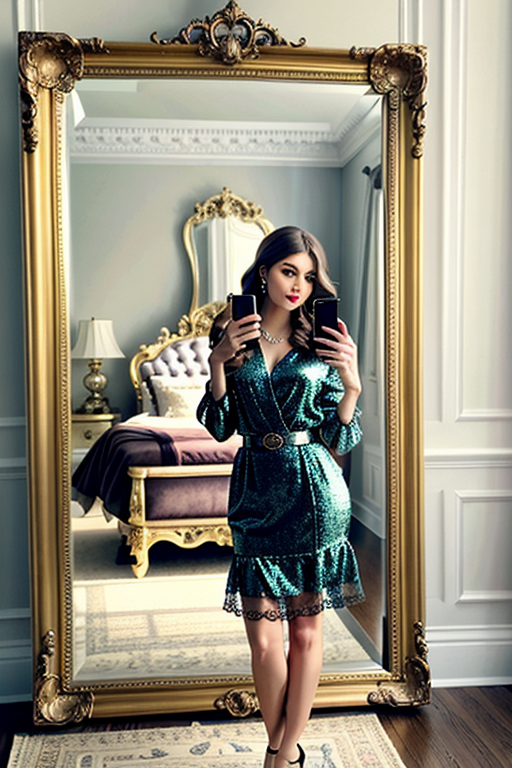 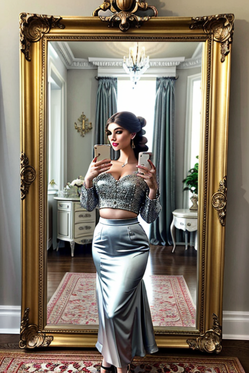 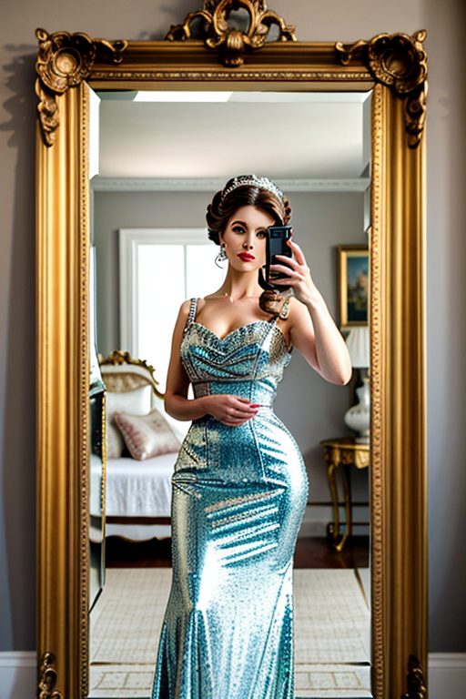 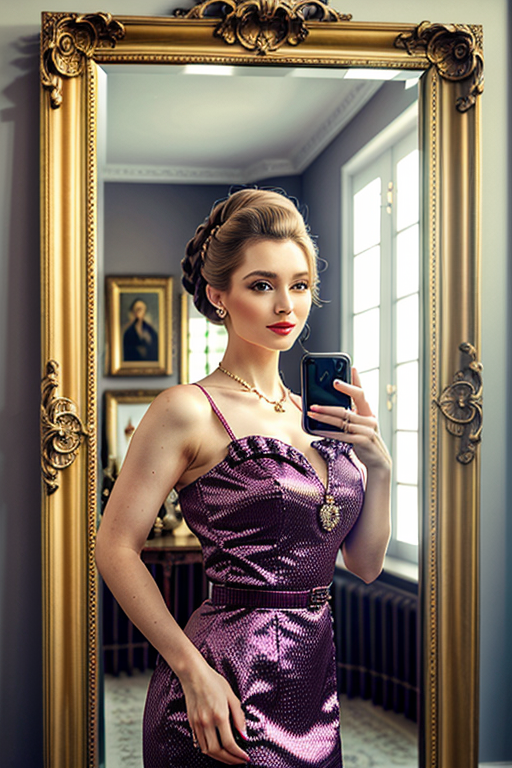 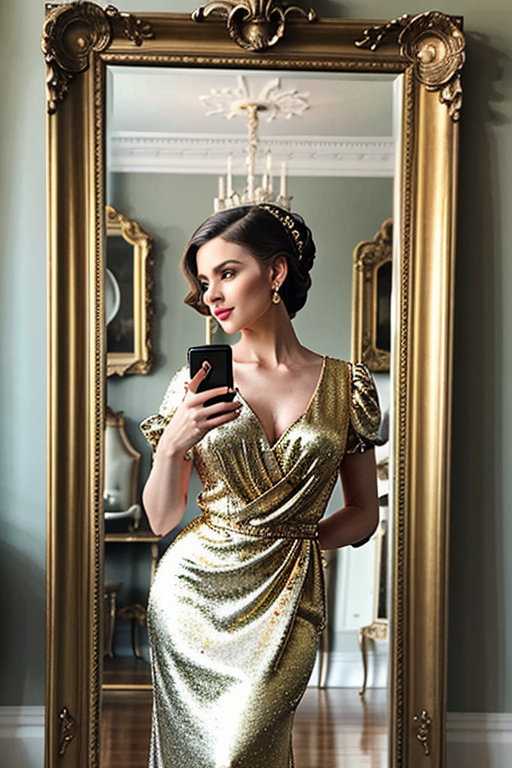 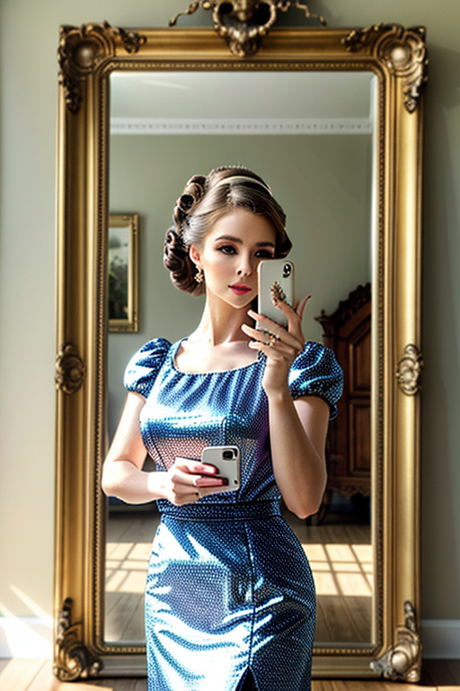 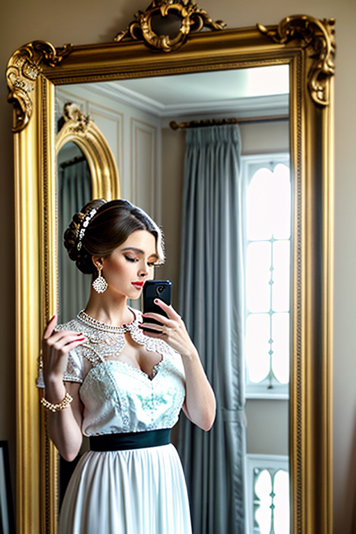 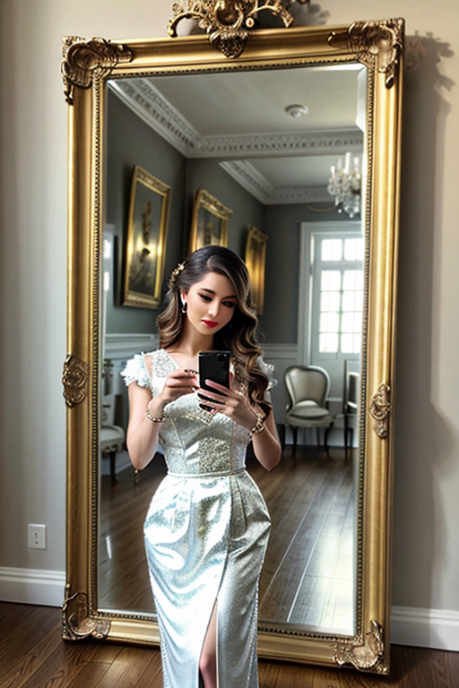
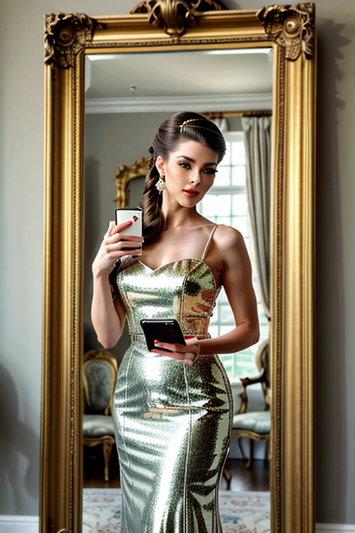
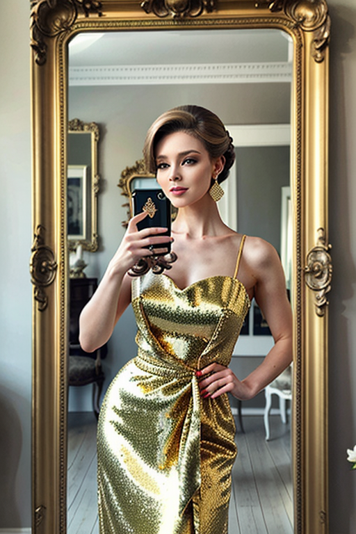
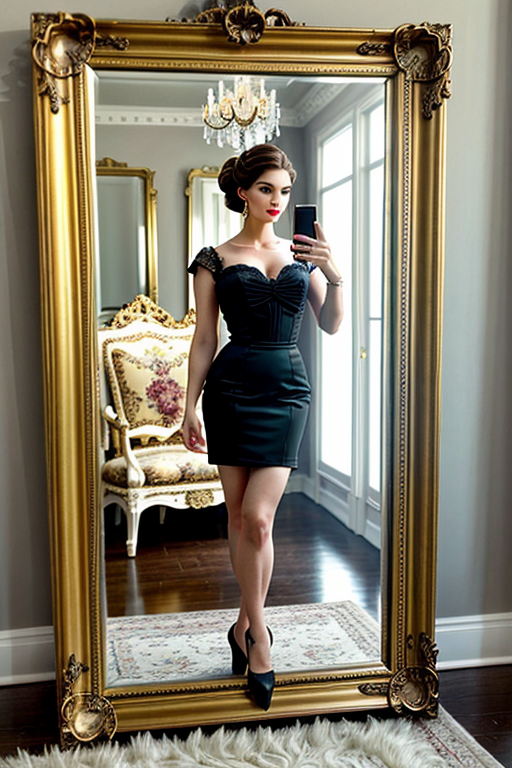
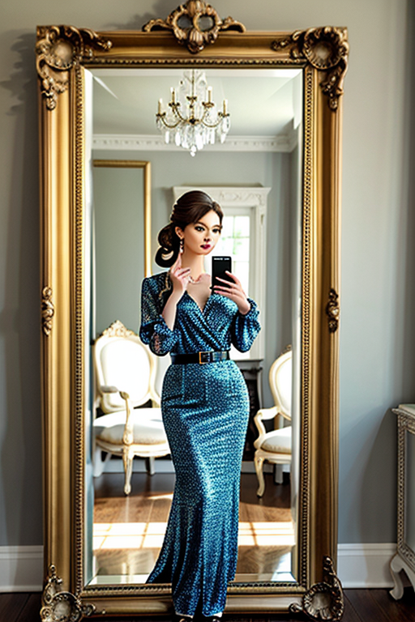
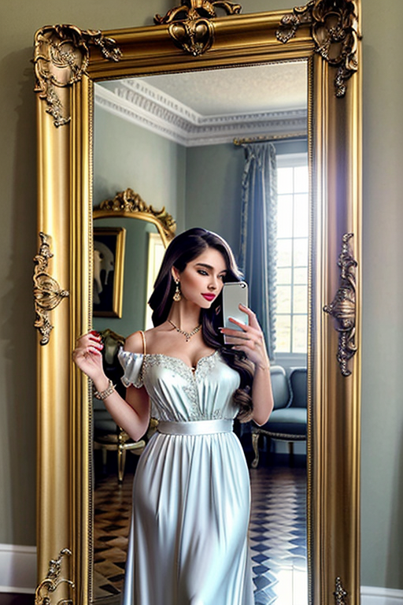


Designed for readers looking into page9, this page emphasizes clarity and consistency. Alt text and headings are optimized to make the content accessible and to provide consistent cues across the site. Subtle differences in wording help avoid duplication across similar pages. Bookmark the page if it’s useful; updates aim to improve clarity, speed, and overall structure over time. Alt text and headings are optimized to make the content accessible and to provide consistent cues across the site. Subtle differences in wording help avoid duplication across similar pages. For more context, browse related entries linked nearby; each page offers a slightly different angle to limit overlap. Alt text and headings are optimized to make the content accessible and to provide consistent cues across the site. Subtle differences in wording help avoid duplication across similar pages. Internal navigation leads to related items with comparable tone or composition. This reduces bounce and supports exploration within the same theme. For more context, browse related entries linked nearby; each page offers a slightly different angle to limit overlap.